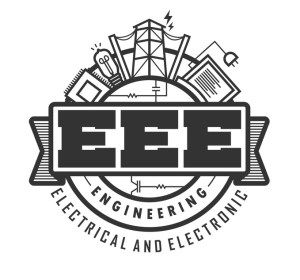

The CSE course covers computational-related subjects such as programming languages, algorithm analysis, software, device hardware & programme design. Computer science was previously considered as part of the departments of mathematics or engineering, but now it has become a different field of engineering.
IT full form is Bachelor of Technology in Information Technology. This course covers subjects like mathematics, engineering mechanics, computer science, etc. The private and government sectors offer plenty of job scope in India. Both students and parents favour a career in information technology, as there are plenty of opportunities abroad. This success of IT is also due to its ability to improve a commoner’s life. Digital technology, a byword for smart life, has become the primary driver for making life simpler, smoother and more comfortable. A man with knowledge of information technology can turn the wheels of fortune in the contemporary world.
A civil engineer is a person who practices civil engineering – the application of planning, designing, constructing, maintaining, and operating infrastructure while protecting the public and environmental health, as well as improving existing infrastructure that may have been neglected. Civil engineering is one of the oldest engineering disciplines because it deals with constructed environment[1] including planning, designing, and overseeing construction and maintenance of building structures, and facilities, such as roads, railroads, airports, bridges, harbors, channels, dams, irrigation projects, pipelines, power plants, and water and sewage systems.
This course is divided into a total of eight semesters, two semesters per year. Both practical and theory exams are held at the end of each year. The curriculum provides students with a solid base in the foundations of electronics and communications engineering through classes such as Analog & Digital Communications, Signals and Structures, Modern Logic & Circuits, Coding, etc.

Mechanical engineering is the application of the principles and problem-solving techniques of engineering from design to manufacturing to the marketplace for any object. Mechanical engineers analyze their work using the principles of motion, energy, and force—ensuring that designs function safely, efficiently, and reliably, all at a competitive cost. Mechanical engineers make a difference. That's because mechanical engineering careers center on creating technologies to meet human needs. Virtually every product or service in modern life has probably been touched in some way by a mechanical engineer to help humankind.

In EEE the competition is not very tough and the availability of jobs too are good. Electrical graduates are employed in Electricity Boards/Utility companies responsible for installation, maintenance, operation of power handling equipment and systems. Industries manufacturing large electrical machines and equipment employ engineers in design, production and testing. For individuals dreaming of JTO(Junior Training Officer), DRDO(Defence Research and Development Organisation), ISRO(Indian Space Research Organisation) and GATE, EEE is not a good choice. This is because they have a separate paper for ECE, while students pursuing EEE have to study a lot of other things. Besides this, EEE students can’t take IES while ECE students can.